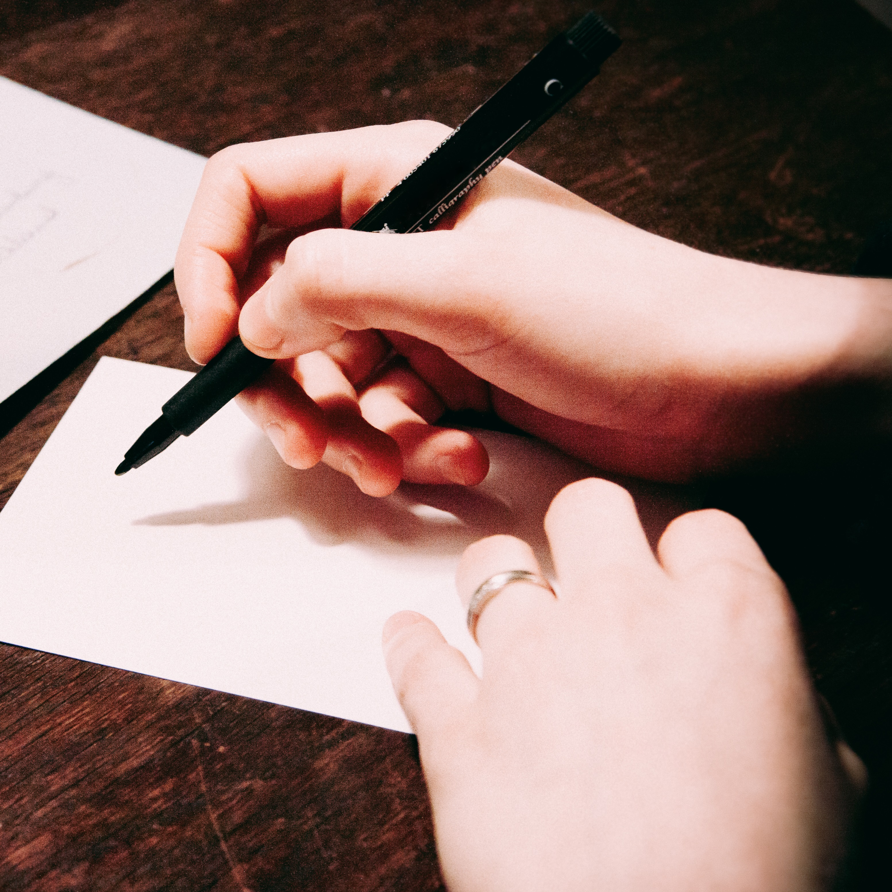
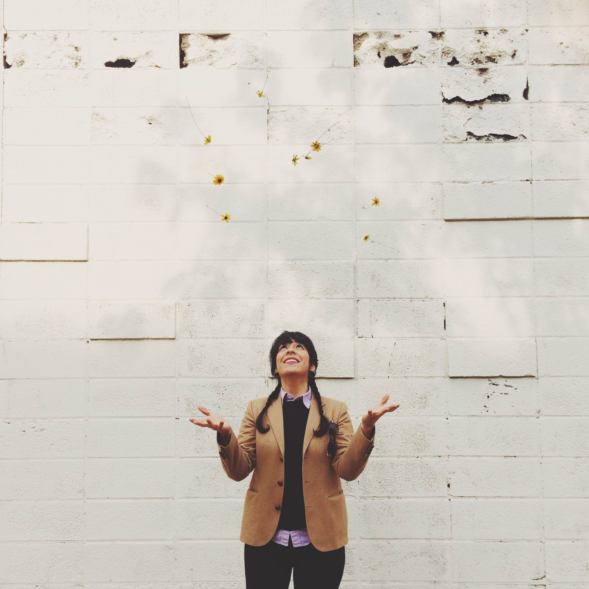

Project
Here is a glimpse into some of my projects.
Designing open innovation activities
Speaker of Workshop
Rapid prototyping Workshop and Competition
Workshop facilitator
Approach
Together, these form my approach toward innovation and design.
Human Centered Design
A product or service is useless unless it's fully designed to fits in users life in a natural way and make it easier for them. It happens only when we have considered customers' inputs and needs all way through our design process from the very first step to the last.
Prototyping and Testing
First, geting real with sketches and having fun building them, and then Validating ideas by gathering feedbacks from real customers.
Customer Engagement
Understanding the full customer journey, through Customer journey mapping, blueprinting and getting customer insights in various ways.
Experience
3 years of experience in different aspects of Service design, Project Management and Product development.
-
2015
Aalto Entrepreneurship Society (Aaltoes)
Core team member.
Emecs-thon
Local coordinator in Aalto
-
2014
Joint project of OP bank-Futurice and Aalto University
openfin hack&ideathon- Service design competition
Event Coordinator
Joint project of Op bank and Aalto University
Business developement project
Student project manager
Aalto University, HSL
Service Design Project
Service designer- Customer engagement

2013
Aalto University, F-secure
Service design project
Service designer- Customer engagement
2011-2012
Parnian Co.
Project management intern
Snow pars Co.
implimentation of ISO 9001 and 14000
Quality assurance intern
KimiaShid Co.
production and Inventory system Engineer
Internship

This is Me
Mahnoush
I studied service design and engineering in Aalto University and now I'm living in Helsinki. I'm fascinated by how innovation can influence our wellbeing, communication and Life. I constantly look into new ways to improve experiences and different methods to empower innovation in different aspects of work and life. To me the best source of inspiration are people and their stories, I think best services are those designed to give great interfaces and experiences to people and that's where I crave to learn more about!
Don't hesitate to say Hi if you like to :)
- (+358) 466 463436
- mahnoush.mojtabaie (@)gmail.com